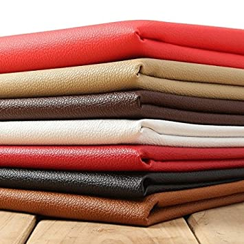

Water Resistance
If the leather is treated or waxed then it will be resistant against water and other liquids. When working outside or in kitchens. Leather shoes can keep your toes dry from any spills or puddles.

.png) Sai Rexine House
Sai Rexine House
Artificial leather, also called synthetic leather, is a material intended to substitute for leather in upholstery, clothing, footwear, and other uses where a leather-like finish is desired but the actual material is cost prohibitive or unsuitable.
If the leather is treated or waxed then it will be resistant against water and other liquids. When working outside or in kitchens. Leather shoes can keep your toes dry from any spills or puddles.

Compared to other fabrics that can be difficult to clean, leather is easy to wash down with a damp cloth. Because the material is breathable, leather products aren't difficult to dry either after they have been washed.
Leather is not a trend it does not come in and out of style. Every peice of genuine leather is considered stylish in all seasons and eras.
Clothes made from synthetic fibers and fabrics have been considered as damaging to the environment during the manufacturing process as they release harmful gases. As leather is a natural material, no harmful chemicals were used to create it - making it eco-friendly!